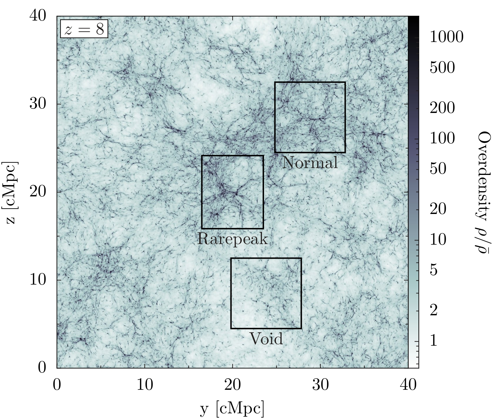
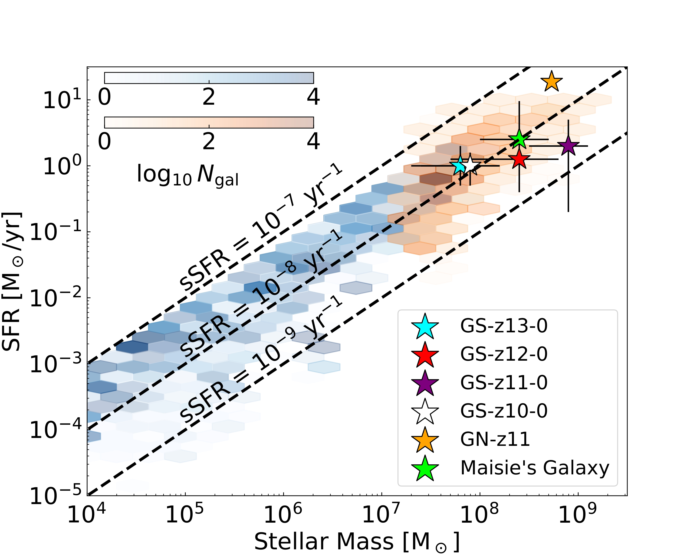

Current Research: I am working on creating a catalog of mock observations and physical properties of the Renaissance Simulations. Ultimately, the goal is to have an easily accessible catalog of properties from the high-redshift, high-resolution Renaissance Simulations to compare against results from JWST and future telescopes. I am using Powderday, a dust radiative transfer package, to get the mock observations, like the spectral energy distributions (SEDs) and images for the catalog. Many of the physical properties I am calculating or pulling from pre-existing data. Some of the properties I have included so far are the half-light radii, half-stellar mass radii, UV absolute magnitude, apparent magnitude, number of Population (Pop) III stars, and star formation rates. I have run Powderday and tested my catalog on a smaller set of test data. I am now running Powderday and my catalog on the Renaissance Simulations.
Future Research: The other half of this project will consist of me predicting signatures of Pop III stars and active galactic nuclei (AGN). Pop III stars are zero metallicity stars that formed in the very early universe and are possible seeds for supermassive black holes. AGN are very luminous supermassive black holes that sit in the centers of galaxies. I will search the Renaissance Simulations for massive Pop III stars and determine if they have any particular observables and if they are detectable in reasonable exposure times. When studying the AGN, I will need to include AGN particles using Powderday because Renaissance does not include AGN; I will vary the luminosity of these AGN and study their visibility.
Why is this project important? Thanks to the launch of JWST in 2021, we are getting our first glimpse into the high redshift Universe, and the astrophysics community would benefit from predictions of what JWST will observe. Currently there are no publicly available synthetic observational databases of galaxies with such high redshifts and resolution, so mine will be the first. Our work will also continue to show that the Renaissance Simulations are aligning well with what JWST has observed (which is discussed more in the section on my previous work). The synthetic observations I will calculate will show the evolution and origins of the galaxies JWST observes. We will determine why the galaxies observed by JWST have been so compact, and we will better understand the features of these galaxies that JWST cannot show us. Quantifying Pop III star signatures in the Renaissance Simulations' galaxies could further improve the efficiency of searching for Pop III galaxies with JWST, allowing for even more observations and a better understanding of our current observations. We will be able to answer questions about the formation of Pop III stars at low redshifts. Studying AGN with our simulations will help us study high-redshift galaxy evolution. It will also help us fill the knowledge gap surrounding the 75% of AGN that are obscured from JWST.
The Renaissance Simulations: These are the simulations that I am using in my project. They are high resolution simulations with galaxies at a high-redshift and low-mass. The image below shows the 3 zoom-in regions comprising the Renaissance Simulations: the Rarepeak, Normal, and Void regions. The Rarepeak region has a high density while the Void region has a low density. The simulation begins 15 million years after the Big Bang and evolves to z = 15 for the Rarepeak region, z = 11.6 for the Normal region, and z = 8 for the Void region. Each region has approximately 1k galaxies and 10k Pop III stars. Overall the simulation is a (40 Mpc)3 comoving volume.
With the launch of JWST, there has been a higher than expected amount of galaxies with large stellar masses at high redshifts, causing some people to call into question the validity of the ΛCDM model of cosmology. We began this research project with the desire to show that the Renaissance Simulations do align with what JWST has been finding. The details of our work can be found in this paper: arXiv:2304.13755. In sum, we found that the star formation rates in the Renaissance Simulations do smoothly transition into a large box simulation that overlaps the galaxies seen by JWST as seen by the plot below. We found that the Renaissance Simulations were overall consistent with the galaxies that JWST had found thus far, suggesting the current ΛCDM model of cosmology has not been violated by JWST's observations, and we provided an idea of the history of these galaxies.
At my undergraduate institution, Clemson University, I worked with Dr. Jonathan Zrake on determining the morphology of a spiral wave in its primary accretion disk by studying its radius and pitch angle. Additionally, I did my senior thesis with him; since I was interested in gravitational waves, I worked on a project using a Python program to plot LISA verification binaries' characteristic strain against LISA sensitivity curves. I created a poster for my senior thesis of my results and an overview of the LISA mission.
I also did two REUs. My first REU was a remote REU during the summer of 2020, between my sophomore and junior year, at Stony Brook University with Dr. Michael Zingale. This was my first astrophysics research experience, so I spent part of the summer learning the invaluable skill of coding in Python. I helped their group confirm the porting of their Microphysics code from Fortran to C++ by graphing mass fractions of neutron stars vs. time. I also ran their code Castro with various reaction networks to simulate a one-dimensional flame burning in a neutron star. In the summer of 2021, between my junior and senior year, I did an REU at Louisiana State University with Dr. Peter Diener. When I began this REU, I had never taken any sort of relativity course, so my project was my first introduction to general relativity. During the summer, I learned how to transform the Teukolsky equation to tortoise and hyperboloidal coordinates. I also learned how to decompose the equation into spherical harmonics in Schwarzchild and Kerr spacetime. I learned all of this to help improve the efficiency of a code that solved the Teukolsky equation in Kerr spacetime.